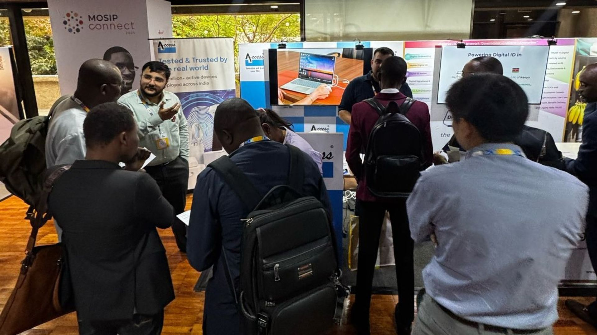

05 March 2025
Our experience at MOSIP Connect 2025 - 3 Days in Manila!
Team Access Computech exhibited at the MOSIP Connect 2025 from 11th to 13th March in Manila, Philippines. It was 3 days full of learning, networking, and growing!

05 March 2025
Team Access Computech exhibited at the MOSIP Connect 2025 from 11th to 13th March in Manila, Philippines. It was 3 days full of learning, networking, and growing!
There’s something different about being in a room full of people who are all working towards the same goal, ‘Making biometric identity systems stronger, more inclusive, and ready for the real world’. That’s exactly what MOSIP Connect 2025 in Manila was all about.
As a Solution Discovery Exhibitor at this year’s event, Access Computech Pvt. Ltd. (ACPL) had the opportunity and privilege to engage with governments, tech leaders, and system integrators from across the world. All three days were packed with insightful discussions, thought-provoking questions, and meaningful exchanges with the forces responsible for shaping the future of digital identity.
A lot of the conversations we had with various stakeholders, often turned to these three fundamental questions:
And these weren’t just technical discussions. Government officials and system integrators were asking about the real people that use our hardware and the systems which they depend on.
Many officials we spoke with were already in the early stages of rolling out their own national identity programs, much similar to Aadhar and UIDAI, and wanted to ensure that their solutions wouldn’t just work in theory but in practice as well.
Fortunately, with over three decades of experience in biometric authentication, we’ve seen firsthand what it takes for identity systems to succeed in real-world conditions.
In India, the most populated country on the planet, our hardware plays a critical role in Aadhaar-based authentication, public distribution systems, financial transactions, and access control.
Every day, millions of people rely on biometric verification using our devices for essential services, from rations to healthcare. And any slip-ups can cost lives and livelihoods.
This year, we attended MOSIP Connect with one purpose, to tell the world that our technology is tested and trusted by the real world. Because designing and testing a biometric device in a controlled environment is one thing, but having it process millions of authentications daily, in markets, banks, and remote villages, is a completely different challenge.

That’s what made MOSIP Connect 2025 such a valuable experience for us.
We showcased our innovations, exchanged ideas, learnt from global perspectives, and will now contribute to identity systems that make a difference globally. For us, it was a chance to reaffirm what we stand for. For us, it was an opportunity to scale with impact.